01
Общество и городская среда · событие дня
Поставил задачу в этом году полностью завершить работы на 9 объектах
Поручил МинЖКХ контролировать ввод объектов в эксплуатацию.…
Поручил МинЖКХ контролировать ввод объектов в эксплуатацию.…
Основные расходы: · Ленинский Мемориал — ремонт и экспозиция: 405 млн из федерального бюджета и 77 млн из областного; · Литературный музей «Дом Языковых» — завершение реставрации: 83 млн федеральных и почти 16 млн областных средств; · Школа креативных индустрий на базе ДШИ №10 — 43 млн рублей.……
Никонорова служит в ульяновском театре драмы более 50 лет, почти два десятилетия возглавляет учреждение и руководит региональным отделением Союза театральных деятелей РФ.…
до 1,04 млн рублей, поскольку действующий лимит давно не соответствует реальной стоимости квартир.
Нынешний лимит давно не соответствует реальным ценам на квартиры, объяснили депутаты.
Гуркин, режиссёр — Василий Мищенко, композитор — Алексей Пономарёв, художник-сценограф — Сергей Тимонин.…


Губернатор Алексей Русских провел рабочую встречу с председателем Поволжского банка Сбербанка Наталией Цайтлер.Приоритетными…
Гончарова Наталья Никонорова удостоена государственной награды указом Президента Российской Федерации.…
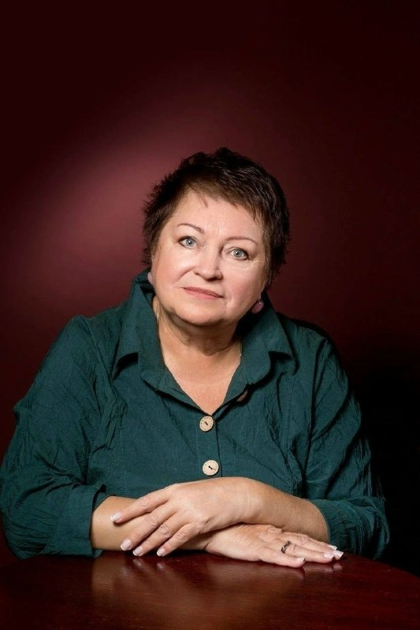
Запрет планируют сохранить до 2032 года. Профильный комитет Заксобрания единогласно поддержал законопроект.…
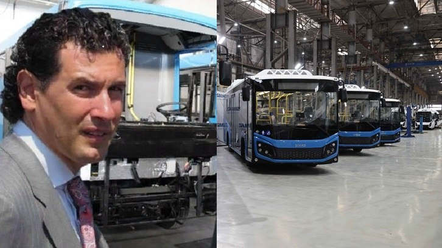
Теперь, когда все оговоренные сроки возврата средств остались далеко позади, кредиторы вынуждены искать правды в Арбитражном суде, так как добровольно возвращать деньги, похоже, никто не планирует.…
Ульяновский автобусный завод «СИМАЗ», долгое время сохранявший имидж стабильного предприятия, оказался в эпицентре серьезного кризиса.…
А в 2022 году спасать рощу решили уже за счёт налогоплательщиков, спустив 256 млн рублей на липовую очистку.…
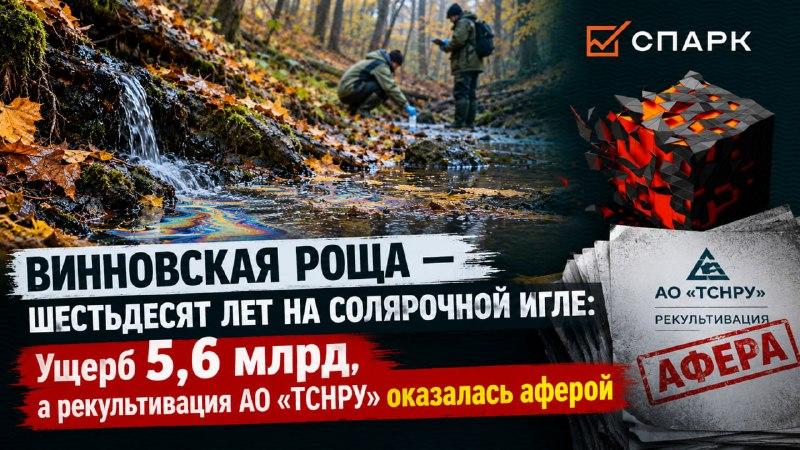
На первом этапе автомобили делают на базе сваренных и окрашенных кузовов, уточняет пресс-служба марки.
АО «СТП «ПЗМЦ» это: Первое и единственное станкостроительное предприятие, созданное в новейшей истории России.…

Проект стоимостью 277 млн рублей реализован при поддержке регионального Агентства по привлечению инвестиций.…

🔹 ЦТС завершил поставку 50 тысяч плат для техники «Катюша » «Цифровые телевизионные системы» завершили поставку первых 50 тысяч российских периферийных плат для принтеров и МФУ «Катюша».…


В списке направлений — Стамбул, Баку, Пхукет, Мальдивы, Бангкок, Китай и другие города и страны.…
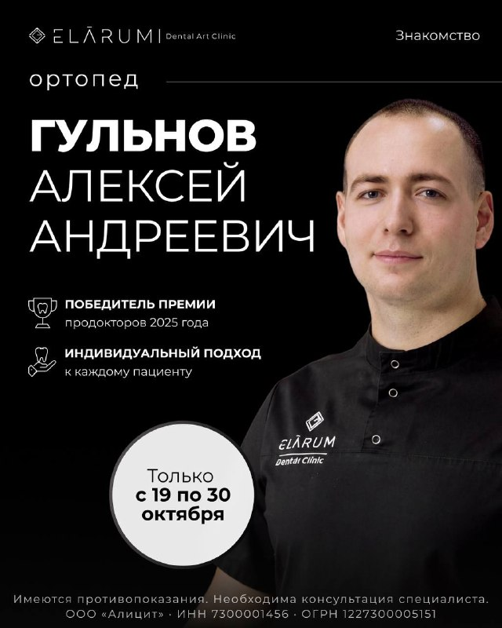
Если вы задумываетесь о восстановлении зубов, хотите оценить их состояние или узнать, какие варианты лечения подойдут именно вам, — это возможность начать с консультации специалиста. Количество мест ограничено.…
За 12 лет благодаря проекту врачебный состав в районах региона пополнили сотни специалистов.

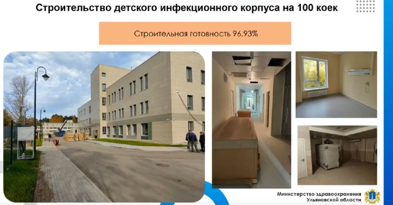
Среди препаратов — «Совигрипп», «Ультрикс Квадри» и «Флю-М».…
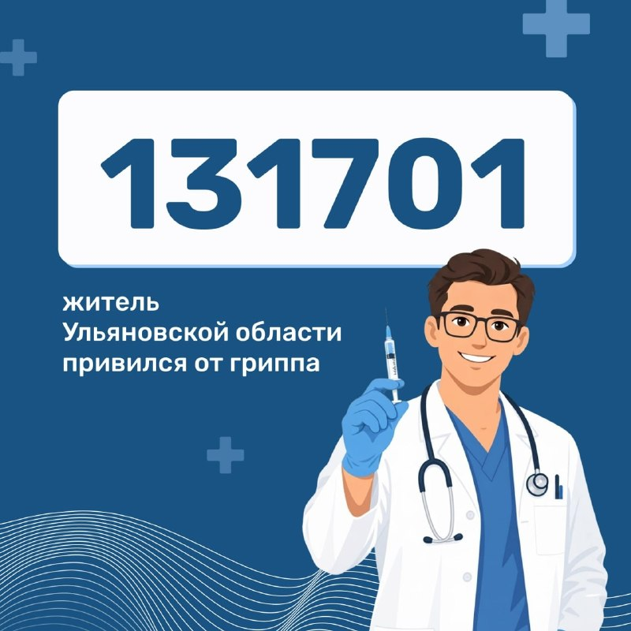
Места нападений: «Лесное озеро» в Димитровграде, а также сёла Ерёмкино, Тиинск, Филипповка и рабочий посёлок Мулловка.…
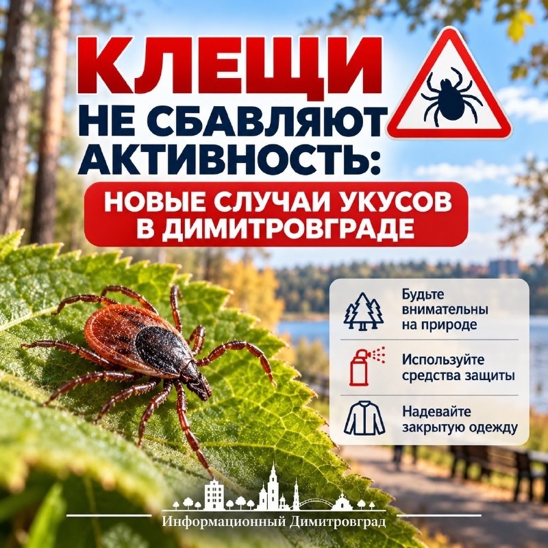
Служба крови находится по адресу: улица III Интернационала, 13/96.…
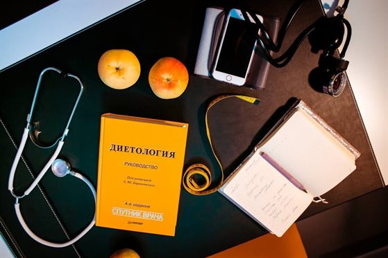
Больных из сёл и деревень он предложил направлять в крупные городские больницы.…
Пациентка Валентина Филимонова через 10 дней после вмешательства выписана домой в хорошем самочувствии.…
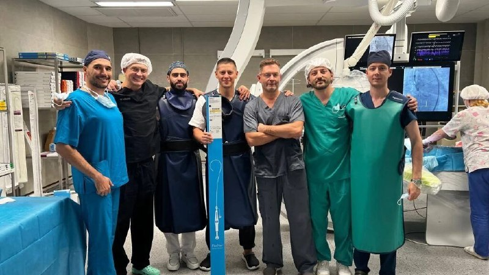

Монтажные работы на спортивном объекте ещё идут.

CyberX приглашает вас пройти отбор и побороться за место в составе клуба! 🎮 Формат MIX — приходите без команды!…

Индекс рассчитывается, исходя из тактико-технических действий игроков в зависимости от позиции, и отражает качество их игры в конкретном матче.…

Уже послезавтра команду ждёт домашний юбилейный Кубок «Волга-Спорт-Арены».…

🔹 В Зеленодольске открылся новый спортивный комплекс В Зеленодольске открылся современный крытый мультиспортивный центр «ФИЗРА», где предусмотрены футбольные, волейбольные и баскетбольные площадки, зоны для падела и настольного тенниса, залы для гимнастики, единоборств, фитнеса и спортивных танцев.…

Впереди домашняя игра с «Велесом» в это…

Ульяновцы смогут предъявлять электронное свидетельство о рождении при посещении культурных и спортивных мероприятий, а также социальных учреждений.…
Под Вашим чутким началом клуб проделал уже немалый путь и добивался лучших результатов в своей без малого 80-летней истории: 5 медалей второго дивизиона, два выхода в "подэлиту" и сохранение прописки там, звёздный "Анжи" и гегемон отечественного футбола последнего десятилетия "Зенит" на стадионе "Труд" в рамках розыгрыша Кубка.…
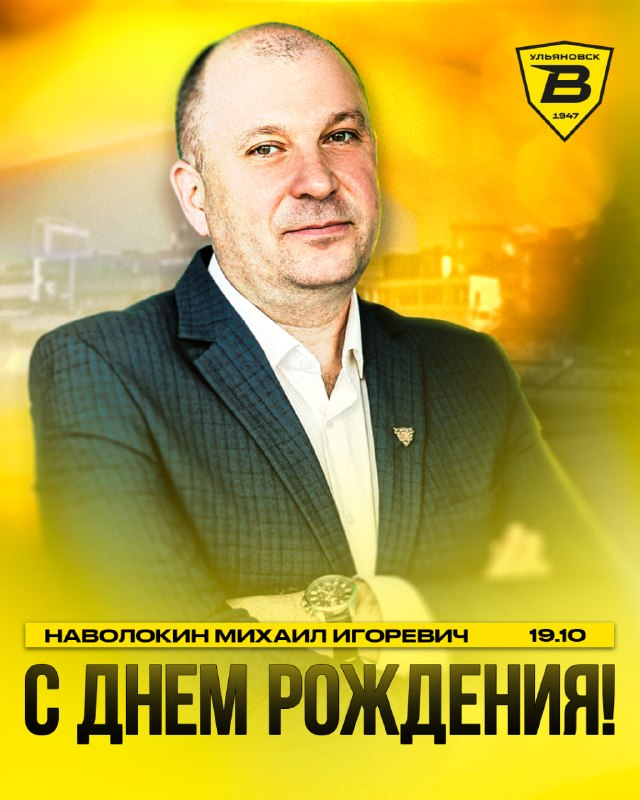
Отличная возможность показать силу духа, отточенную технику и волю к победе.…
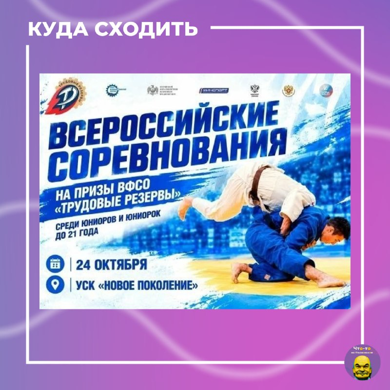
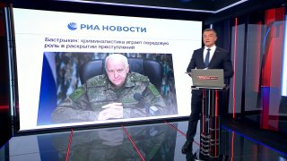
👨🚒 Ульяновские спасатели помогли ликвидировать пожар в Заволжском районе.…
В Заволжском районе Ульяновска пожилая пассажирка с ограниченными возможностями здоровья получила 280 тысяч рублей компенсации за тяжелую травму, полученную при поездке в маршрутном такси, — об этом сообщили в региональной прокуратуре.…

Я тут же закончила разговор и спросила почему он мне грубит.…
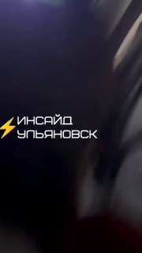
На директора ООО «Улинжиниринг» возбудили уголовное дело за невыплату зарплаты работнику, сообщает прокуратура Ульяновской области.…

Украденный шоколад она продавала прохожим, а деньги тратила на себя.…
Раньше его уже наказывали за нетрезвое вождение.…
Если во время уроков — детей переводят в безопасное место до отмены угрозы.…
❗️ Директорам ульяновских школ напомнили , что делать при ракетной опасности.…
По данным УМВД, приятели выпивали в квартире на улице Пушкарева, когда между ними вспыхнул словесный конфликт.…
24 октября 2026 года будет проводиться сельскохозяйственная ярмарка на территории Агропромпарка- Кулатка в р/п Старая Кулатка Приглашаем участвовать ЛПХ, для реализации продукции произведенной в своем личном подсобном хозяйстве.…
Как рассказал губернатор Алексей Русских, вьетнамская сторона заинтересована в поставках ульяновской сельхозпродукции, в том числе зерна, муки, подсолнечного масла, кондитерских изделий, круп.…
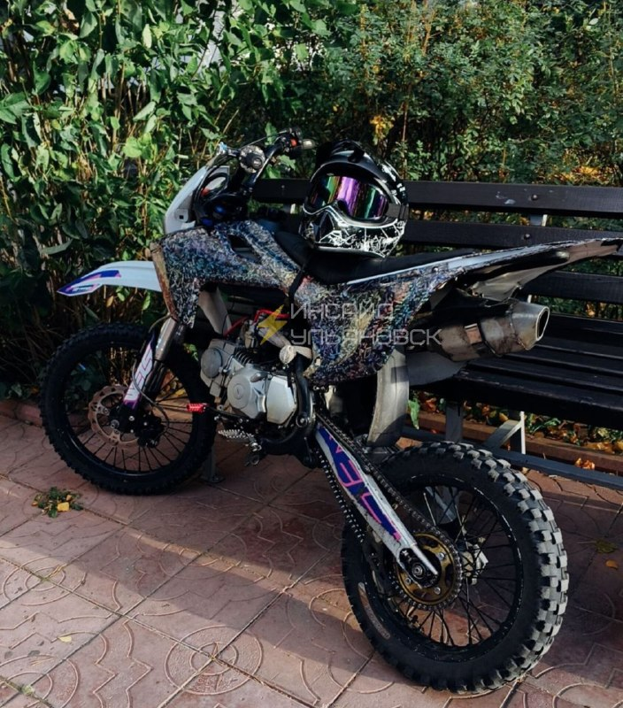
В Европе допускают скорый телефонный разговор своих лидеров с Путиным, однако сомневаются, что он согласится на предложенные варианты.…
Неужели нет инвентаря для захоронения бедного пса..этот пёс скорее всего охранял территорию был полезен, кто-то его кормил, был другом, а сейчас лежит никому не нужный!…
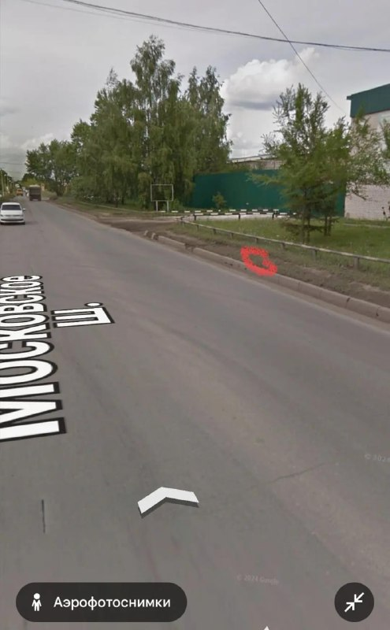
Инцидент произошёл в автобусе №78 около 18:20 возле «Плазы».…

Подсел ко мне , сразу же начал раздвигать ноги и дрочить.…
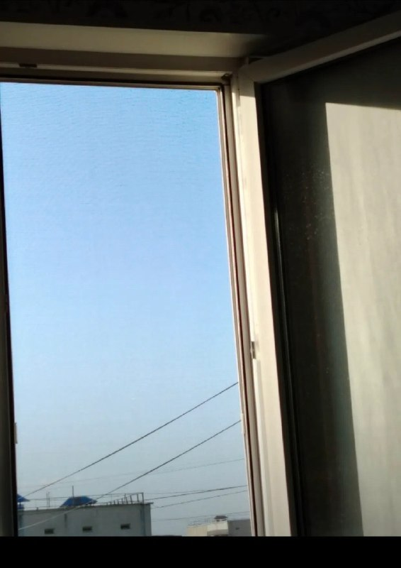
После этого разговор по телефону был прекращен и у водителя спросили, почему он грубит.…
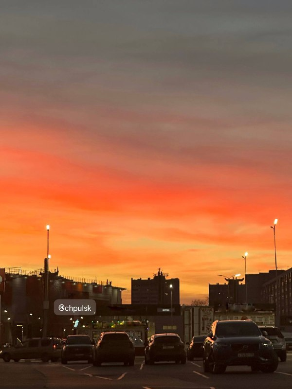
В Кадровом центре Новомалыклинского района в рамках Фестиваля профессий прошло профориентационное занятие «Твой вариант» для учащихся 8 класса.…
Областные чиновники публично признали, что не все директора учебных заведений сработали чётко - некоторые отнеслись к ситуации безответственно.…
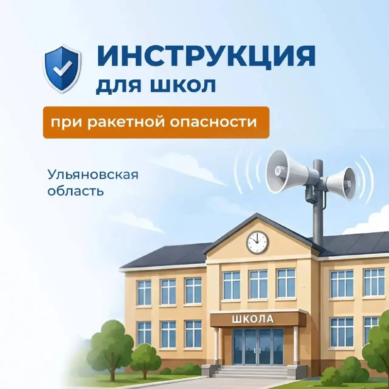
🔹 По всей стране прошел Единый день открытых дверей федерального проекта «Профессионалитет».…
В день открытия классов для ребят подготовили патриотическую…

По поручению главы города Александра Болдакина в Ульяновске продолжается системная работа по профориентации школьников по разным направлениям, в том числе по изучению отечественной истории.…


Программа «Технологические смены «Мир профессий» вошла в число лучших практик страны в номинации «Горизонты образования».
Научную и методическую поддержку проекту оказывает Ульяновский государственный педагогический университет имени И.Н. Ульянова.…

Димитровградский технический колледж и технико-экономический колледж пригласили школьников старших классов.…
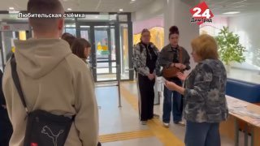
✅ С Иваном Алексеевичем мы знакомы давно — всегда позитивен, улыбается, старается быть активным. Мудрый и добрый человек.…
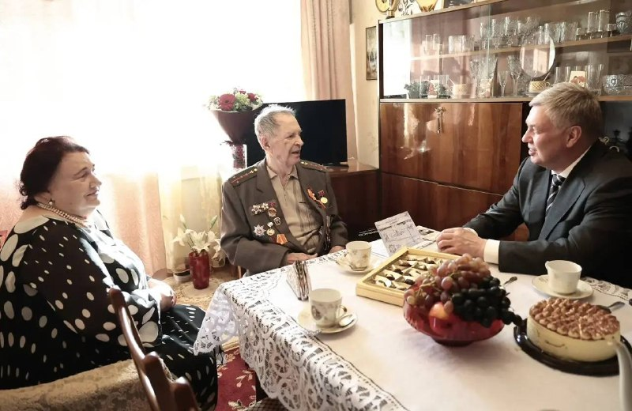
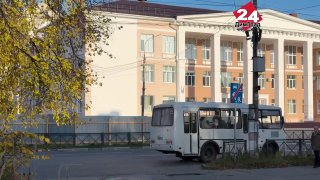
По закону услуги агента должны оплачиваться, поэтому, чтобы соответствовать нормам закона, с 1 декабря мы начнем брать минимальную плату с ПВЗ», — сказали там.…
Музыка придётся по душе любителям рок-н-ролла, новой волны, чёрно-белого кинематографа и авангардной живописи.…

Организовали его работники местного сельского дома культуры и ЦАД «Грация жизни».
| Тема | Завтра | Ожидание | Уверенность |
|---|---|---|---|
| БПЛА и воздушные угрозы | ↓ спад | ~0.0 упоминаний | средняя |
| Школы и вузы | ↓ спад | ~19.3 упоминаний | средняя |
| Погода | ↑ рост | ~20.1 упоминаний | средняя |
| ЖКХ, газ, тепло | ↑ рост | ~6.1 упоминаний | средняя |
| Урожай и АПК | ↓ спад | ~2.9 упоминаний | средняя |
| Авиапром / УКБП / Ил-114 | → плато | ~7.4 упоминаний | низкая |